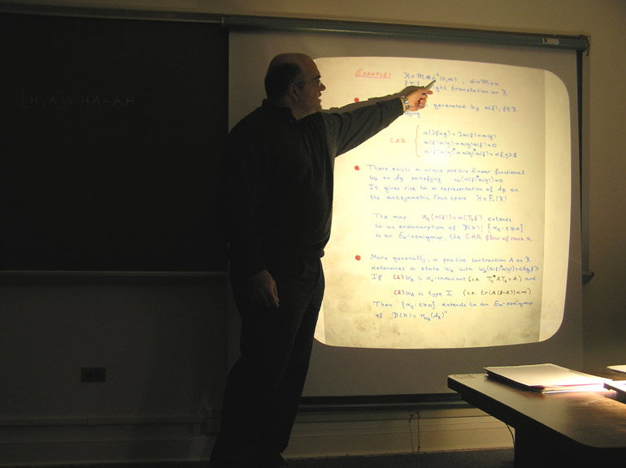
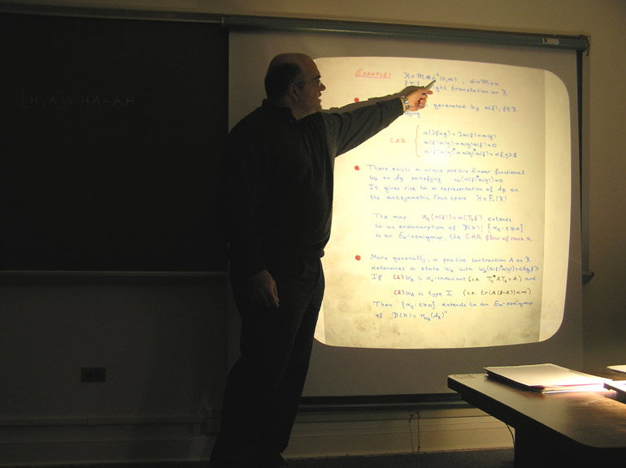

Seminar in operator theory and operator algebras (MATH 9310)
Spring 2011
The seminar is organized by David Sherman. We meet Tuesdays 3:30-4:30 in Kerchof 326.
February 8 |
Tom Kriete, UVaA recent theorem of Cowen and Gallardo-Gutierrez: Almost unitary equivalence between certain composition and Toeplitz operators |
February 15 |
no meeting |
February 22 |
David Sherman, UVaConditional expectations onto maximal abelian *-subalgebrasConsider a pure state on a maximal abelian *-subalgebra (MASA) of B(l2): does it have a unique state extension to all of B(l2)? Dirac's 1949 text on quantum mechanics seems to assume that it does. However, in 1959 Kadison and Singer used a detailed calculation in Fourier analysis to prove that there are multiple conditional expectations (CEs) from B(l2) onto a continuous MASA; this implies that some pure states on the MASA have nonunique extensions to B(l2). They also showed that there is a unique CE from B(l2) onto a discrete MASA, famously leaving open the question of uniqueness of pure state extensions in this case.Chuck Akemann and I recently answered the general question, "When is there a unique CE from a semifinite von Neumann algebra onto a singly-generated MASA?" Our methods rely on the new observation that a unique CE onto a singly-generated MASA must be weak* continuous, and in particular provide a short, Fourier-free route to the results for B(l2). In this talk I'll focus on B(l2) and define all the basic terms. |
March 1 |
Craig Kleski, UVaCommutative and noncommutative Choquet boundariesLet M be a linear subspace of C(X). The Choquet boundary of M encodes information about M, and can be used to recover the Shilov boundary of M. It is also closely related to peak points for M. We'll discuss examples in the commutative case, then generalize to separable C*-algebras. Time permitting, we'll also talk about recent work of Arveson that resolved an old open question about the noncommutative Choquet boundary. |
March 8 |
Spring break |
March 15 |
no meeting SEAM (and John Conway Day) will be held March 17-19 at the University of Florida. |
March 22 |
no meeting |
March 29 |
no meeting
The colloquium on March 31 will be given by David Kerr, Texas A&M. |
April 5 |
no meeting
The colloquium on April 4 will be given by John McCarthy, Washington University in St. Louis. |
April 12 |
no meeting |
April 19 |
Paul Bourdon, Washington and Lee UniversityHardy spaces hospitable to Hermitian weighted composition operators |
April 26 |
Bill Ross, University of RichmondModels for symmetric operators I |
April 29note special day2:30 PM Ker 326 |
Vladimir Bolotnikov, The College of William and MaryBoundary interpolation problems for analytic self-maps of the unit diskWe will present a solvability criterion for the following boundary interpolation problem: given a finite number of points on the unit circle, find an analytic self-map of the unit disk which has specified values as well as specified derivatives up to specified orders at these points. The values and derivatives are taken in the sense of non-tangential limits, and the order of the highest desired derivative can depend on the input point on the circle. Some partial results concerning the case of specifying an infinite number of derivatives will also be discussed. |
May 2note special day3 PM Ker 128 |
Don Hadwin, University of New HampshireWhen is an operator S an analytic function of an operator T?Here is the abstract. |
May 3 |
Bill Ross, University of RichmondModels for symmetric operators II |
May 5note special day1:15 PM Ker 128 |
GPOTS teaserCraig Kleski and David Sherman will preview their GPOTS talks. |

 
